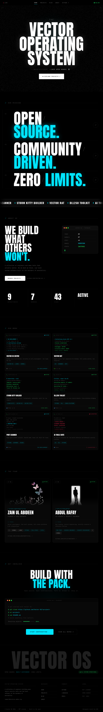
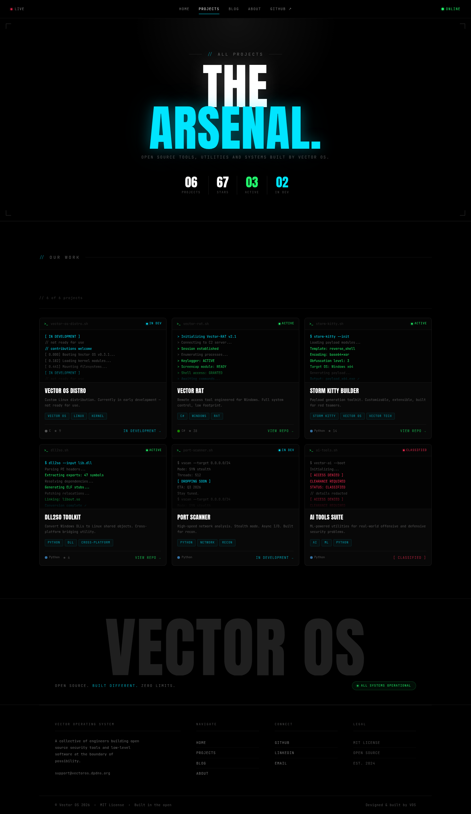
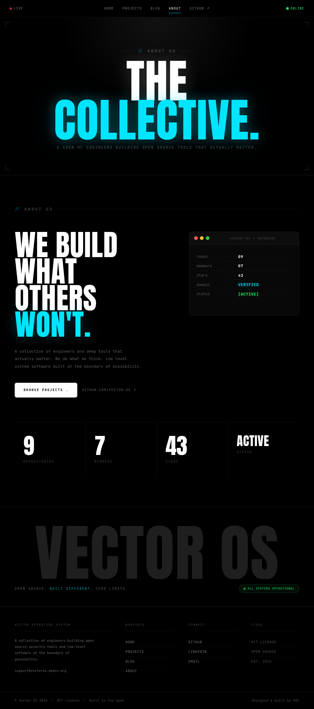
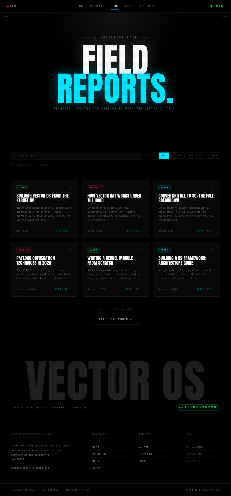
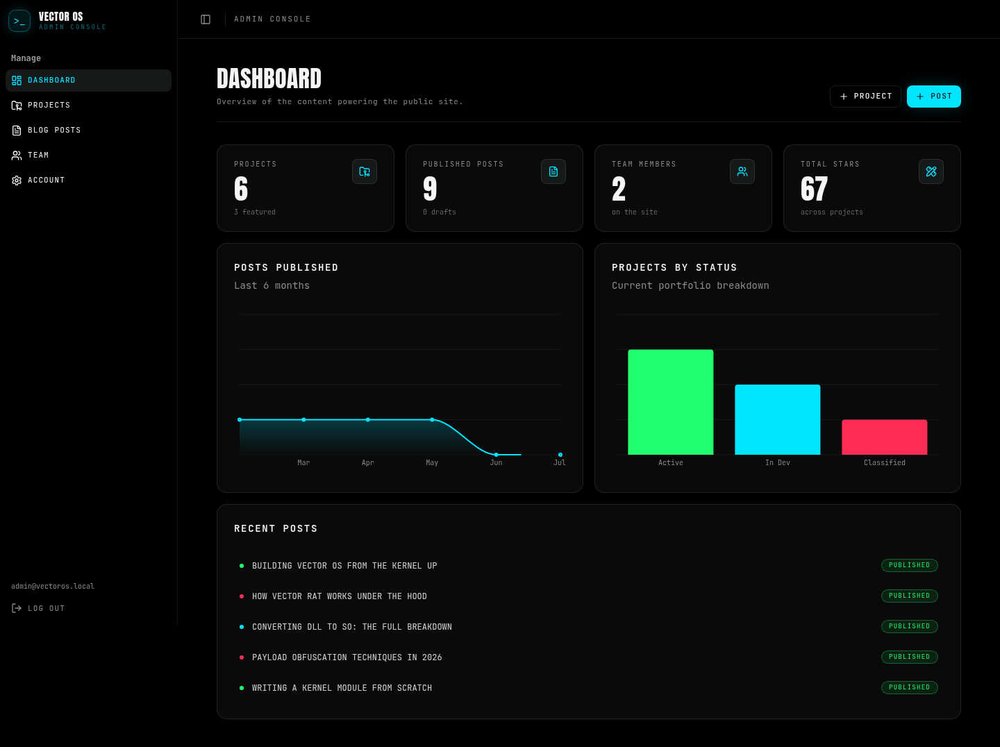
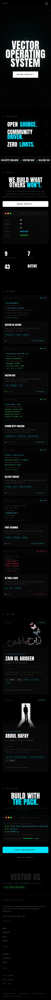

Vector OS // polish pass
A site-wide polish of the Vector OS marketing site and CMS. The dark terminal identity is preserved exactly — this pass adds a curated, per-surface motion system, fixes the two real performance hot-spots, makes every animation reduced-motion safe, and cleans the foundation underneath (design tokens, a shared section shell, one focus system). Verified across every page at five breakpoints with real headless-Chrome screenshots.
A distinct on-brand signature per surface, drawn from the terminal vocabulary: boot logs,
decrypt reveals, scan-sweeps, CRT channel flicker, magnetic buttons, a running git clone.
Variety, not one uniform fade.
Hero canvas + tilt rewritten (no more ~60fps React re-render at rest). Reduced-motion honored
by every JS effect. Design tokens, a shared <Section>/<Container>,
off-token hexes retired, one focus ring.
Every marketing page and the full admin CMS captured at 390 / 768 / 1024 / 1440 / 1920. Zero horizontal overflow anywhere; the mobile nav gained Esc / outside-click / scroll-lock.
Each surface gets its own idea. All of them respect prefers-reduced-motion
(they snap to the final state) and none animate layout on a hot path.
The 0→100% counter now streams a fake kernel boot log — [ ok ] mounting /dev/core, loading modules… — resolving to a SYSTEM READY flash before the curtain lifts.
Headline decrypts on load, a cyan spotlight tracks the cursor, the CTA is magnetic, and the RGB glitch stays — now on a canvas that costs ~100× less.
Scroll-scrubbed: the line nearest viewport-center resolves into focus while a signal spine tracks progress down the list. Scroll reads are rAF-throttled.
Hover pauses the marquee (pure CSS) and each label glitches to cyan — a live, pokable data feed.
The status panel types its rows out one at a time with a blinking caret; the stat counters count up and the status word decrypts into ACTIVE.
Each card reveals like it's connecting to a node: a cyan scan-sweep wipes down and the @handle decrypts into place.
The git clone block actually runs — lines type in with a caret, then Receiving objects: fills a bar to done.
Cards reveal with a staggered scan-sweep; changing a filter fires a CRT recount flicker on the result line. Terminal bootlogs scroll on hover.
Switching category does a short CRT channel-flicker as the grid re-tunes; the header keeps its full-page scanline overlay (now beneath the nav).
The four corner brackets draw themselves in on reveal, the two-word title decrypts, and a soft spotlight follows the pointer.
The active link gets an indicator that draws in from the left; the mobile menu now closes on Esc / outside-click and locks body scroll.
The giant wordmark keeps its light sweep and gains a cyan bloom and letter-spacing breathe on hover.
A lighter, product-register touch: staggered card/row reveals, button press feedback, consistent form focus — no heavy canvas effects in the tool.
The changes that don't show up in a screenshot but matter most for quality.
setTilt() every frame, re-rendering the whole hero ~60fps even at rest. It now writes the transform straight to the DOM and parks itself once settled.useReducedMotion() hook now gates every JS effect — canvas, tilt, scramble, count-up, boot sequences — so they snap to final values.:focus-visible cyan ring across the site; mobile nav gets Escape, outside-click close and body-scroll-lock; brand selection colour.@theme. Off-token near-blacks (#0d0d0d, #050505, #030303) and repeated cyan-glow rgba literals now resolve through tokens.<Section> + <Container> replaces the copy-pasted shell string across 6 sections; the navbar breakpoint is aligned to the 900px content system; 15 keyframes registered.Horizontal overflow (scrollWidth − clientWidth) captured on the live pages via headless Chrome. Every cell is 0.
| Page | 390 | 768 | 1024 | 1440 | 1920 |
|---|---|---|---|---|---|
| / (home) | 0 | 0 | 0 | 0 | 0 |
| /projects | 0 | 0 | 0 | 0 | 0 |
| /blogs | 0 | 0 | 0 | 0 | 0 |
| /blogs/[slug] | 0 | 0 | 0 | 0 | 0 |
| /about | 0 | 0 | 0 | 0 | 0 |
| /admin (dashboard) | 0 | — | — | 0 | — |
| /admin/* (forms) | 0 | — | — | 0 | — |
Full-page screenshots from the running site (scroll each frame). Motion is stripped from a still, so these show the polished end-state — the brand is deliberately unchanged.






src/lib/db/index.ts
(guarded by USE_PG_LOCAL=1), plus an untracked .env.local,
scripts/seed-local.ts, a pg dev-dependency, and this .lavish/
folder. None of it is committed; all of it gets reverted before hand-off, restoring the original Neon-only
db/index.ts. Flagging so nothing local leaks into the repo.